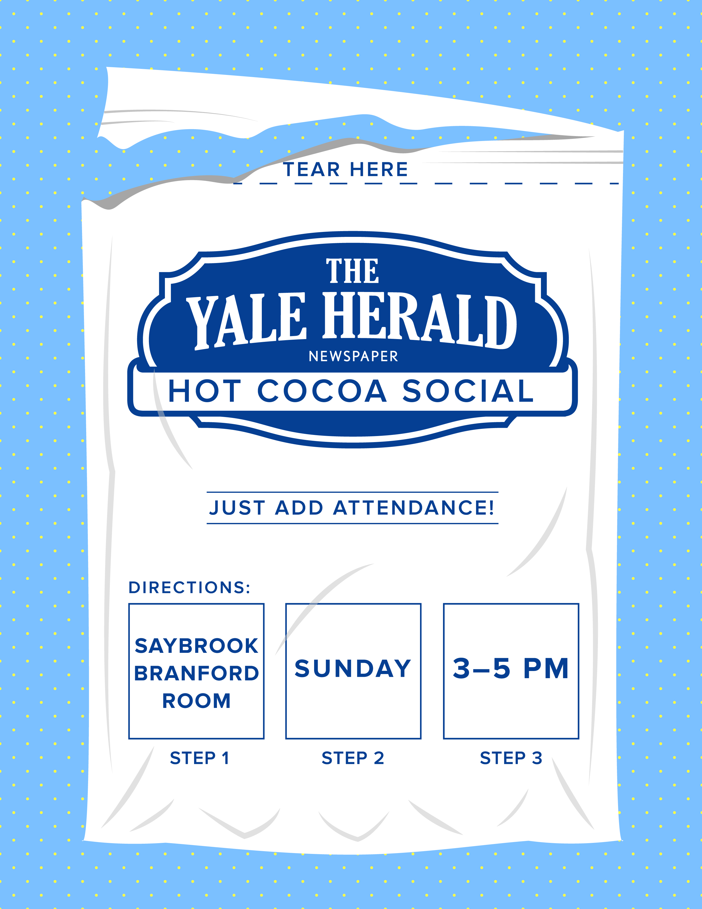
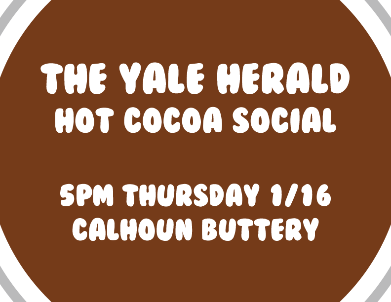
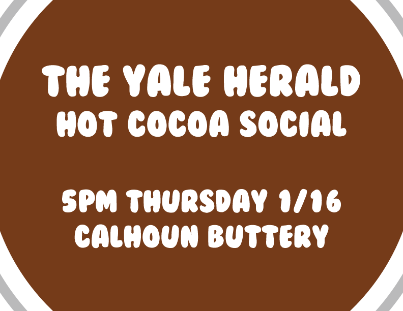

The Yale Herald
As a member of the graphics staff and associate design editor for the Yale Herald, I designed graphics, covers and infographics for the weekly student newspaper. I often wrote short pieces as well (some of which are available here and here & here).



 
